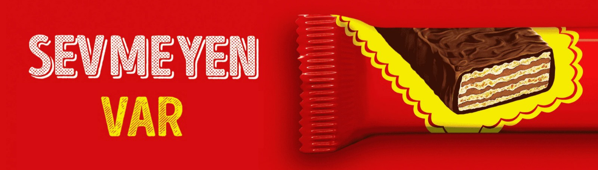

Bu site de ne?
Hoş geldin! Bu siteyi yandaş firmaları ve bağlı holdingleri listelemek için oluşturduk. Sağ üstteki menüden boykot listesine tıklayarak epeyce kabarık semirengiller listesini inceleyebilirsin. Ayrıca internette dolaşırken boykotlu firma ve ürünleri otomatik olarak tespit etmek istersen, tarayıcına Boykot Alarmı uzantısını ekleyebilirsin. Uzantı tamamen açık kaynaklıdır ve kodun tamamına GitHub'dan erişebilirsin.
Kim bu yandaşlar?
Yandaş derken, iktidara yakınlığıyla serveti ve gücünü arttıran, ülkemiz kaynakları üzerinde imtiyaz elde eden bir avuç iş insanını kast ediyoruz. Boykot listemiz epey kalabalık dursa da 85 milyonluk halkımıza kıyasla gerçekten de “bir avuç†kalıyorlar.
Neden boykot yapıyoruz?
Boykot, hükümetimiz tam olarak kavrayamasa da, var olan en barışçıl protesto biçimlerinden biridir. Adilane şartlarda iş yapmadığını, bulundukları konuma halkın karşısında durarak ama garip bir şekilde tamamen halkın parasıyla gelmiş birtakım firmaların ürün ve hizmetlerini tercih etmeme hakkımızı kullanıyoruz, hepsi bu.
Boykot cidden işe yarar mı ki?
Ülkenin yarısı olduğumuzu hesaba katarsanız, organize bir boykot, hemen hemen her firmanın müşterilerinin yarısı, birçok firma içinse müşterilerinin yarısından da fazlasının kaybı demektir. Ayrıca bizim paramızla bize ahkam kesmeye devam edememeleri de işin bonusu sayılabilir. Açıkçası ilk başta ben de biraz şüpheliydim ancak koskoca bakanların D&R reyonunda kolpadan kitap karıştırması, kuruyemiş sırasına girmesi vs. beni ikna etti diyebilirim.
Neden onlarca boykot listesi, uygulaması ve uzantısı varken seni tercih edeyim?
Onlarca listeden, uygulamadan ve uzantıdan hangi birini tercih ederseniz edin; ama yeter ki edin 💕